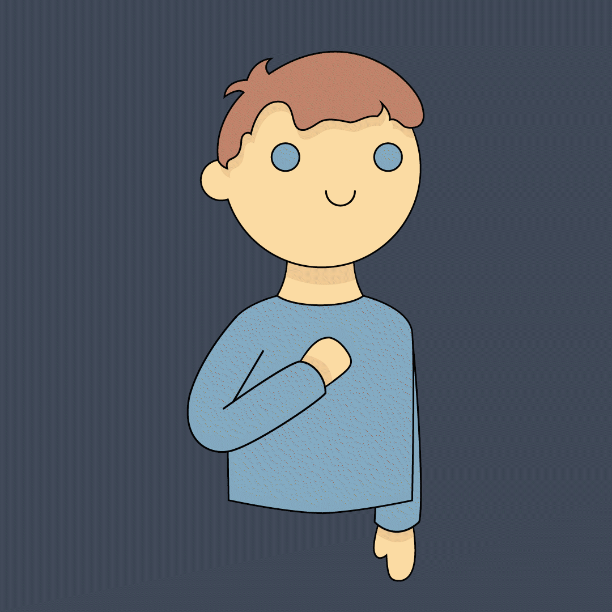

3 måder at få kontrol

Træk vejret
Fokusér på at trække vejret helt nede i maven. Hold vejret i et par sekunder og pust ud. Træk vejret i nomal hastighed et par gange mellem hver øvelse.

Tæl til 10
Tæl langsomt til 10 før du sætter dig ind i bilen. På den måde kan du genvinde dit fokus og distancere dig fra følelsesmæssig påvirkning.

Afspænd kroppen
Hold på rettet med begge hænder. Spænd hårdt om rettet i nogle sekunder og slap af igen. Gentag et par gange.